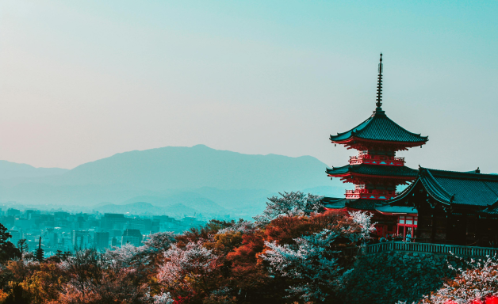

Welcome to KyotoVenture! We’re a group of travel enthusiasts who love Japan and want to share the wonders of Kyoto with you. We know how challenging trip planning can be—what to bring, what to know, where to go, and what to expect—so our goal is to simplify this process and make it easy! Kyoto is a top destination for visitors to Japan, but with so much to see, it can be hard to decide where to start, especially for first-timers. Our site guides you through both popular spots and hidden gems, so you can focus less on planning and more on enjoying your trip. Whether you're a local or a visitor, we’re here to help you experience Kyoto with ease.
Itineraries
Let us take the stress out of planning! Our customized itineraries allow you to organize each day in Kyoto, while also letting you put a time range and notes for the entire collection or specific days!
Just set a default itinerary and start adding activities to it!
Accommodations
We provide a selection of top-rated accommodations in Kyoto such as homestays, hotels, apartments, ryokans, and guesthouses.
Our real-time booking system makes it easy to find a place that can suit your style and budget.

Travel Tips
Let us take the stress out of planning! Our customized itineraries allow you to organize each day in Kyoto, while also letting you put a time range and notes for the entire collection or specific days!
Just set a default itinerary and start adding activities to it!

Kyoto Knowledge
Let us take the stress out of planning! Our customized itineraries allow you to organize each day in Kyoto, while also letting you put a time range and notes for the entire collection or specific days!
Just set a default itinerary and start adding activities to it!
Our Story
Our team wanted to start with a city in Japan that offers an abundance of experiences for both visitors and locals—one where you can explore beyond the typical tourist attractions found in bustling cities like Tokyo. Kyoto stood out as the perfect choice, blending the old and new, the popular and hidden, and offering a glimpse into the cultural heart of Japan.
Kyoto has it all: from iconic temples and serene gardens to lively markets, traditional tea houses, and vibrant festivals. It's a place where travelers can immerse themselves in Japan's cultural heritage, tasting authentic cuisine, witnessing historic craftsmanship, and strolling through breathtaking landscapes that change with every season. Unlike Tokyo's fast pace, Kyoto provides a more relaxing atmosphere, perfect for those who want to slow down and savor their surroundings.
We created KyotoVenture to help travelers discover both well-known landmarks and lesser-known gems, offering a way to experience Japan’s rich traditions alongside its modern-day allure. Our site invites you to see Kyoto through a new lens, exploring beyond typical sightseeing to find unique, meaningful experiences that reflect Japan’s deeper cultural side. Whether you're seeking adventure, peace, or a taste of authentic Japanese life, Kyoto offers something special, and we're here to guide you every step of the way.